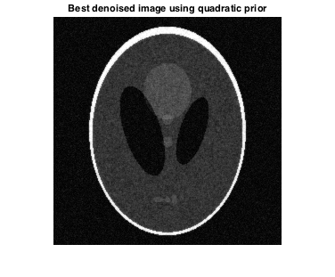
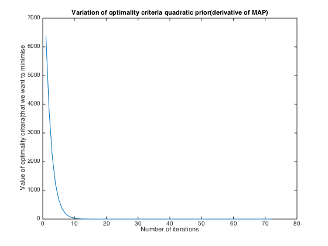
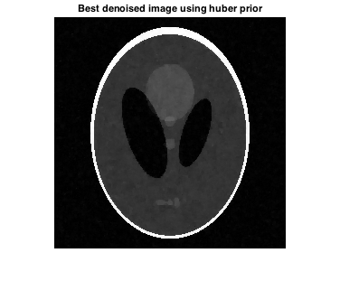
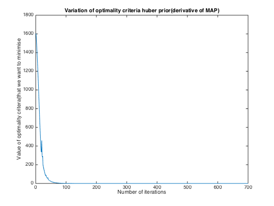
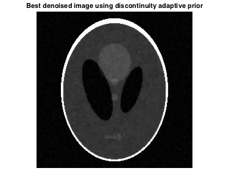
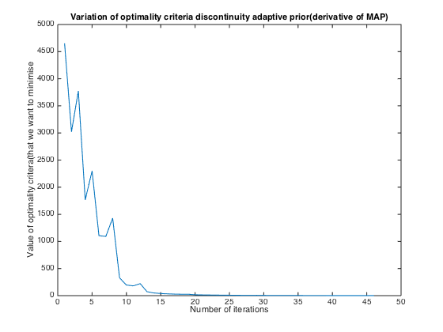
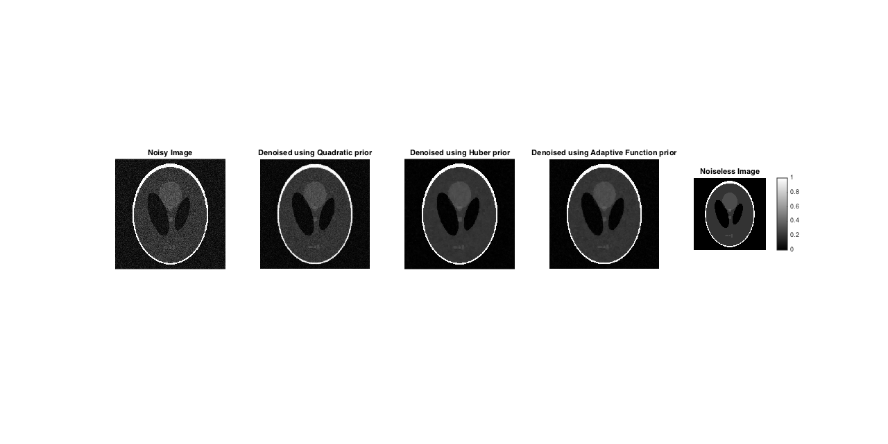

Contents
Denoising a Phantom Magnetic Resonance Image - Quadratic Prior
We want to denoise the image using Bayesian image-denoising algorithm that uses a noise model coupled with a MRF prior that uses a 4-neighbor neighborhood system
clear all load('assignmentImageDenoisingPhantom.mat'); alpha = 0.5; tow = 0.1; x_old = imageNoisy; iteration_count = 1; alpha = 0.05:0.05:0.95; find_optimal_alpha_matrix = [inf, inf]; optim_fn_iteration_variation = [inf, inf]; for alpha = 0.22 tow = 0.1; x_old = imageNoisy; iteration_count = 1; while(tow>0.01) g_x_old = gradient_quadfunction(x_old, imageNoisy, alpha); x = x_old - tow*g_x_old; g_x_new = gradient_quadfunction(x, imageNoisy, alpha); if(sum(sum((abs(g_x_old)>abs(g_x_new)))) > sum(sum((abs(g_x_old)<abs(g_x_new))))) tow = 1.1*tow; x_old = x; else tow = 0.5*tow; x = x_old; end optim_fn_iteration_variation = [optim_fn_iteration_variation; [iteration_count, sum(sum(abs(g_x_new)))]]; iteration_count = iteration_count + 1; end find_optimal_alpha_matrix = [find_optimal_alpha_matrix; [alpha, RRMSE(imageNoiseless, x)]]; fprintf('Number of iterations the gradient descent ran was %f \n', iteration_count); end figure(); quad_denoised = x; imshow(abs(x)) title('Best denoised image using quadratic prior')
Number of iterations the gradient descent ran was 73.000000
figure(); plot(optim_fn_iteration_variation(2:end,1), optim_fn_iteration_variation(2:end,2)); title('Variation of optimality criteria quadratic prior(derivative of MAP)') xlabel('Number of iterations') ylabel('Value of optimality critera(that we want to minimise')
We can verify from above that the optimal value of alpha is 0.22, for RRMSE equal to 0.210
For alpha = 0.264, RRMSE = 0.212 For alpha = 0.176, RRMSE = 0.2119
function output = gradient_quadfunction(x_loop, imageNoisy, alpha)
output = (1-alpha)*2*(x_loop-imageNoisy) + 2*alpha*(4*x_loop-circshift(x_loop,1,1)-circshift(x_loop,-1, 1)-circshift(x_loop, 1, 2)-circshift(x_loop, -1, 2));
function output_value = RRMSE(image1, image2)
output_value = (sqrt((sum(sum(((abs(image1)-abs(image2)).^2))))))/(sqrt(sum(sum(abs(image1).^2))));
RRMSE of noiseless and noisy image is 0.2986.
Denoising a Phantom Magnetic Resonance Image - Huber function
We want to denoise the image using Bayesian image-denoising algorithm that uses a noise model coupled with a MRF prior that uses a 4-neighbor neighborhood system clear all
load('assignmentImageDenoisingPhantom.mat'); alpha = 0.5; tow = 0.1; gamma = 1; x_old = imageNoisy; iteration_count = 1; alpha = 0.05:0.05:0.95; find_optimal_alpha_matrix = [inf, inf, inf]; optim_fn_iteration_variation = [inf, inf]; for gamma = 0.01 for alpha = 0.9 tow = 0.1; x_old = imageNoisy; iteration_count = 1; while(tow>0.01) g_x_old = gradient_adaptive_huber(x_old, imageNoisy, alpha, gamma); x = x_old - tow*g_x_old; g_x_new = gradient_adaptive_huber(x, imageNoisy, alpha, gamma); if(sum(sum(abs(g_x_old))) > (sum(sum(abs(g_x_new))))) tow = 1.1*tow; x_old = x; else tow = 0.5*tow; x = x_old; end optim_fn_iteration_variation = [optim_fn_iteration_variation; [iteration_count, sum(sum(abs(g_x_new)))]]; iteration_count = iteration_count + 1; end find_optimal_alpha_matrix = [find_optimal_alpha_matrix; [alpha,gamma, RRMSE(imageNoiseless, x)]]; fprintf('Number of iterations the gradient descent ran was %f \n', iteration_count); RRMSE(imageNoiseless, x) end end figure(); huber_denoised = x; imshow(abs(x)) title('Best denoised image using huber prior')
Number of iterations the gradient descent ran was 701.000000
ans =
0.0662
 figure(); plot(optim_fn_iteration_variation(2:end,1), optim_fn_iteration_variation(2:end,2)); title('Variation of optimality criteria huber prior(derivative of MAP)') xlabel('Number of iterations') ylabel('Value of optimality critera(that we want to minimise')
We can verify from above that the optimal value of alpha is 0.9, gamma is 0.01, for RRMSE equal to 0.0662
For alpha = 0.9, gamma = 0.01, RRMSE = 0.0662
For alpha = 1, gamma = 0.01, RRMSE = 0.8112
For alpha = 0.72, gamma = 0.01, RRMSE = 0.1949
For alpha = 0.9, gamma = 0.012, RRMSE = 0.0703
For alpha = 0.9, gamma = 0.008, RRMSE = 0.0787
Denoising a Phantom Magnetic Resonance Image - Discontinuity Adaptive Function
We want to denoise the image using Bayesian image-denoising algorithm that uses a noise model coupled with a MRF prior that uses a 4-neighbor neighborhood system clear all
load('assignmentImageDenoisingPhantom.mat'); alpha = 0.5; tow = 0.1; gamma = 1; x_old = imageNoisy; iteration_count = 1; alpha = 0.05:0.05:0.95; find_optimal_alpha_matrix = [inf, inf, inf]; optim_fn_iteration_variation = [inf, inf]; for gamma = 0.015 for alpha = 0.9 tow = 5; x_old = imageNoisy; iteration_count = 1; RRMSE_new = 10; RRMSE_old = 5; while(tow>0.01 && abs(RRMSE_new - RRMSE_old)>(0.0001*RRMSE_new)) g_x_old = gradient_adaptive_disc_adaptive_function(x_old, imageNoisy, alpha, gamma); x = x_old - tow*g_x_old; g_x_new = gradient_adaptive_disc_adaptive_function(x, imageNoisy, alpha, gamma); RRMSE_old = RRMSE(imageNoiseless, x_old); if(sum(sum(abs(g_x_old))) > (sum(sum(abs(g_x_new))))) tow = 1.1*tow; x_old = x; else tow = 0.5*tow; x_old = x; end optim_fn_iteration_variation = [optim_fn_iteration_variation; [iteration_count, sum(sum(abs(g_x_new)))]]; figure(1); iteration_count = iteration_count + 1; RRMSE_new = RRMSE(imageNoiseless, x); end find_optimal_alpha_matrix = [find_optimal_alpha_matrix; [alpha,gamma, RRMSE(imageNoiseless, x)]]; fprintf('Number of iterations the gradient descent ran was %f \n', iteration_count); RRMSE(imageNoiseless, x) end end adap_denoised = x; figure(); imshow(abs(x)) title('Best denoised image using discontinuity adaptive prior')
Number of iterations the gradient descent ran was 47.000000
ans =
0.0854
 figure(); plot(optim_fn_iteration_variation(2:end,1), optim_fn_iteration_variation(2:end,2)); title('Variation of optimality criteria discontinuity adaptive prior(derivative of MAP)') xlabel('Number of iterations') ylabel('Value of optimality critera(that we want to minimise')
We can verify from above that the optimal value of alpha is 0.9, gamma is 0.015, for RRMSE equal to 0.0854
For alpha = 0.9, gamma = 0.015, RRMSE = 0.0854
For alpha = 0.99, gamma = 0.015, RRMSE = 0.3767
For alpha = 0.72, gamma = 0.015, RRMSE = 0.1775
For alpha = 0.9, gamma = 0.018, RRMSE = 0.0873
For alpha = 0.9, gamma = 0.012, RRMSE = 0.0875
figure();
figure('units','normalized','outerposition',[0 0 1 1]) title('All images compared') subplot(1,5,1), imshow(abs(imageNoisy)), title('Noisy Image') subplot(1,5,2), imshow(abs(quad_denoised)), title('Denoised using Quadratic prior') subplot(1,5,3), imshow(abs(huber_denoised)), title('Denoised using Huber prior') subplot(1,5,4), imshow(abs(adap_denoised)), title('Denoised using Adaptive Function prior') subplot(1,5,5), imshow(abs(imageNoiseless)), title('Noiseless Image'), colorbar